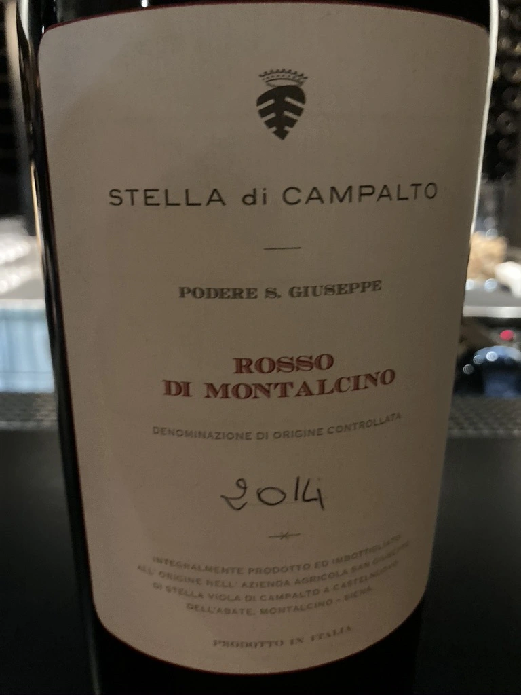

- Type
- Red Still, Dry
- Producer
- Stella di Campalto
- Vintage
- 2014
- Location
- Italy, Rosso di Montalcino DOC
- Grapes
- Sangiovese
- Alcohol
- 13
- Sugar
- 0
- Price
- 5400 UAH
- Cellar
- N/A
Aged for 19 months in 3000l oak barrels.
Ratings
2020-10-27 - 9.00
The first magnum in my life. And what a wine! Since 2014 was not simple year, Stella di Campalto produced only Rosso di Montalcino and the result is very pleasing. Delicate and sensual. Strawberries mixed with flowers and mushrooms. Sophisticated nose (I even forgot to make the first sip). Well balanced and structured, everything in its place. Literally silky. I’d love to spend my evening with this bottle and a good novel.